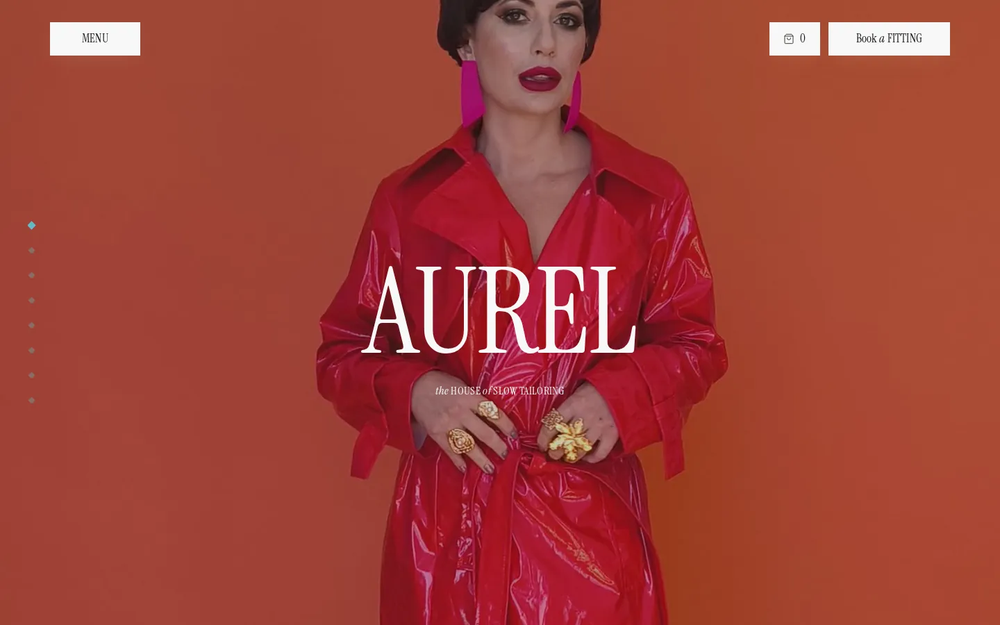
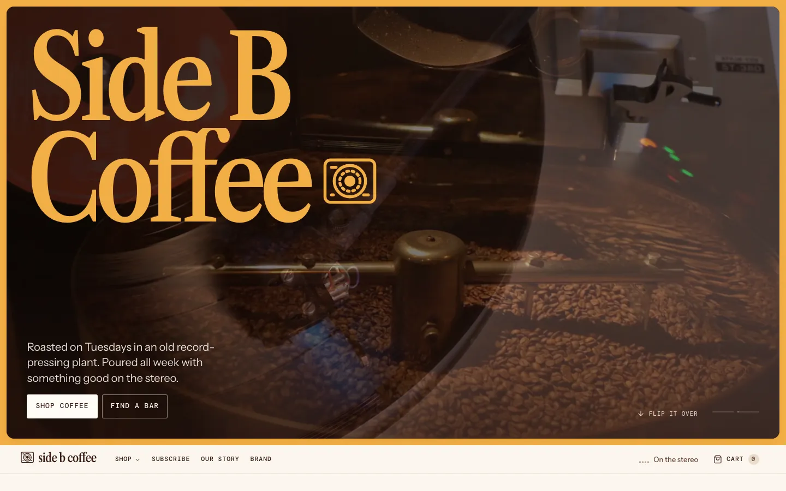

Remix · E-commerce · Fashion
Aurel
A high-end fashion house's site in bone, ink and burnt orange
Clones it into a folder you pick, as a new project. No Codecaine yet? Get it free
Nothing opened? Codecaine has to be installed and opened once for this link to work. Install Codecaine, or download the project and open its folder.

About
A high-end fashion house's site in bone, ink and burnt orange: a film that folds into the header, a garment rising through its headline, sticky split columns, a drifting archive wall and a turning silver seal — across home, collection, product, atelier, journal, house and appointments.
Designed for
- Fashion houses, boutiques and ateliers selling a small, considered collection
- Editorial landing pages built on sticky, scroll-linked sections
- A multi-page shop — collection, product, bag — with every hidden state reachable from the editor
- Studying scroll choreography: pinned stages, clip-path reveals, stacking cards and a sideways track
Details
- Version
- 1.1.0
- Updated
- Sep 30, 2026
- Pages
- 8
- Framework
- vite
- Styling
- tailwindcss@4
- Dev port
3240- SDK
@canvas/react 0.1.1- License
- MIT
- Download
- 580 KB · 89 files
Keywords
Every page
7 pages, as they open at 1440px.


More remixes

Truant — Specialty Coffee Roaster
A loud, photograph-led storefront for Truant, a Lake Superior single-origin roaster

Side B Coffee — Roastery & Listening Bar
A warm, cream-and-rust site for Side B, a small-batch roaster that pours its coffee in two record bars

Drape — AI Try-On
A landing page for an AI fitting room